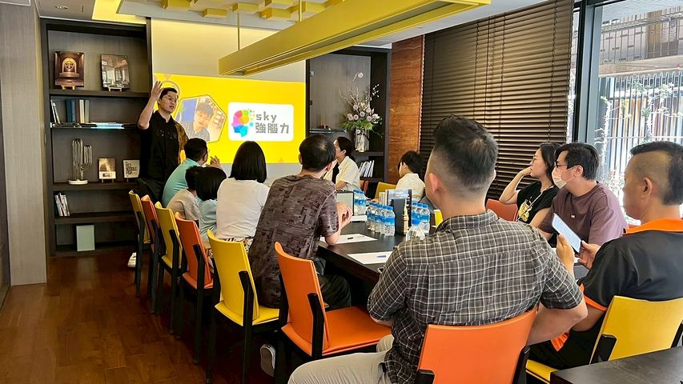
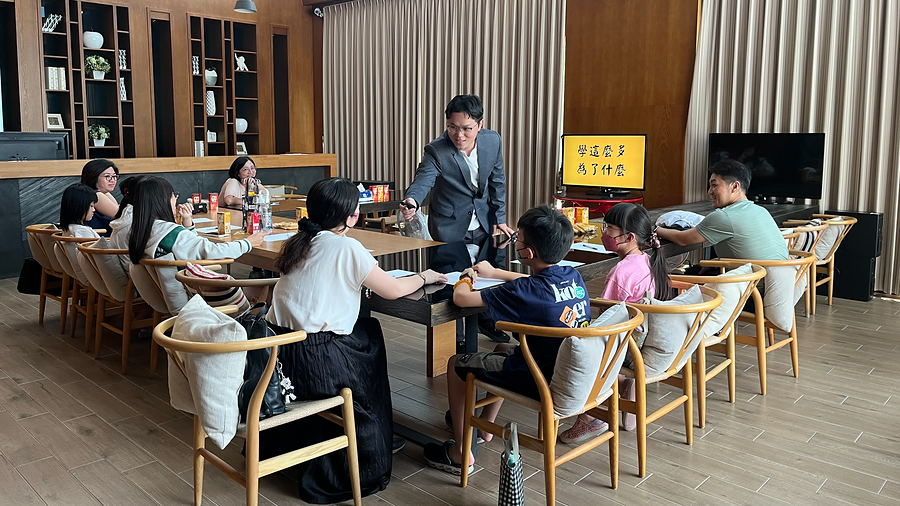

補習班加的是時數。
這 3 小時，換的是方法。
實體實戰班。不是聽演講、不是看影片——現場帶著孩子練，把「反覆看、反覆抄」換成一套他自己會用的記憶方法，每一科都能用，當天就帶回家。
3 小時實體課 ・ 10 歲以上適合 ・ 當天覺得沒幫助，現金全額退你
現場
老師要看得到每個孩子寫了什麼、卡在哪一步，所以人不能多。這是高雄場的教室。


你是不是也看過這幾幕
大部分坐到深夜的孩子，用的其實是同一招：反覆看、反覆抄。這一招對大腦來說最費力，忘得也最快。
單字抄了十遍，隔天小考還是空白。孩子開始相信「我就是記性不好」。
書桌前坐三小時，真正記進去的沒幾行。時間被「重看一遍」吃光。
努力了卻沒有回饋，久了就變成「反正我讀不起來」，連開始都不想開始。
一張圖看懂
早在 1885 年，心理學家 Ebbinghaus 就發現：學過的東西如果完全不複習，會在最初的一兩天掉得最快，之後趨於平緩。這條線的重點不是「你會忘」，而是——只要在對的時間點回想一次，曲線就會被拉起來。
學過之後，還記得多少
兩種讀法的差別，不在第一天，在第六天。
| 時間 | 學完當下 | 1 天後 | 2 天後 | 6 天後 | 31 天後 |
|---|---|---|---|---|---|
| 只靠反覆硬背 | 100% | 約 44% | 約 34% | 約 25% | 約 21% |
| 用方法＋間隔複習 | 100% | 約 80% | 約 86% | 約 88% | 約 90% |
方法差在哪
左邊是大多數孩子現在在做的事，右邊是這 3 小時要教會他的事。
課程內容
每一段都有實作。孩子不是坐著聽，是當場做出結果。
把抽象文字變成看得見的畫面
用熟悉的空間，放進要記的東西
一頁看完整章，複習不用重讀
回家照表操課，方法留得住
當天流程
13:30 進場，16:30 結束。中間有休息。
用一個小測驗讓孩子親眼看到自己的遺忘曲線，先建立「不是我笨」的認知。
現場挑戰：一次記住 20 個彼此沒有關聯的詞，正著背、倒著背。這一段家長通常最驚訝。
帶孩子把自己的英文單字或課文，掛進他熟悉的空間裡。用真的課本練，不是範例。
把一個章節整理成一頁，並帶走一張間隔複習表，知道哪幾天要回想。
不用聽我說
方法有沒有用，在馬路上比在教室裡更看得出來。這兩支沒有腳本、沒有重來，第一次就錄。
影片為街頭隨機實測與現場回饋，未經剪接製造結果；每個人的起點與練習量不同，成效因人而異。
上過的人怎麼說
以下是強腦力學員與家長的分享。我們不修飾成完美故事，也不承諾你的孩子會有一樣的結果。
「最有感的不是分數，是他開始主動想『這題可以怎麼連到上次學的』，思考變得比較有方法。」
「以前背英文單字要坐一整晚，現在他自己把單字變成畫面，複習時間少一半，還會反過來考我。」
「歷史年代以前怎麼背怎麼忘，現在把事件變成一串畫面，一次記住整個章節的順序。」
「數學公式用圖像串起來之後，考試時腦中直接浮出畫面，粗心錯少了很多。」
以上為個別學員與家長的真實經驗分享，屬個人親身經驗，個人成效不同，非一般結果，也不是課程效果保證。本課程為學習方法教學，非醫療行為；若孩子有注意力或學習障礙方面的醫療疑慮，請諮詢專業醫師。
價格
先把我們自己的價目表攤開來，你才知道這個數字是什麼位置。
這 3 小時就是初階班最核心的那一段，我們把它單獨拉出來。你付的不是「便宜版的課」，是「先只買最關鍵的那一段」。
會不會在現場推薦後面的課？會。上完我們會告訴你還有初階班。但這 3 小時本身是完整的——你什麼都不買，也帶得走三個當天就能用的方法，還有一張帶回家的複習表。
再加上當天不滿意就現金全額退你。所以最壞的情況是：你花了一個下午，沒有花錢。
場次
實體小班，現場老師要看得到每個孩子在做什麼，所以座位有限。
先講清楚接下來會發生什麼，你就不會按到一半不知道還有幾關。
上課當天覺得對孩子沒有幫助，當場跟老師說一聲就好，不必寫理由、不用等審核，學費現金全額退還、現場拿到——不走刷退、不用等銀行作業。你只要出席那一堂課就適用，同一位學員以一次為限。完整條款見退費政策。
報名前想問的
會提到，但不會逼你。上完我們會告訴你還有實體初階班（NT$26,800），因為那是這套方法的完整版本。可是這 3 小時本身是完整的：你什麼都不買，也帶得走三個當天就能用的方法和一張回家複習表。現場不會有一對一逼單，也不會有「今天報名才有」的話術——真的想再上，官網什麼時候報名都是同一個價。
這是最常被問的一題。這堂課不是坐著聽 3 小時：分成四段，每一段都要動手做、要出聲、要跟旁邊的人對答案，中間有休息。坐不住的孩子在這種課裡通常比在教室裡表現好，因為他一直有事情做。真的完全進不去狀況，當天說一聲，現金退你。
學得完的是「方法」，練到熟要靠回家。當天會做完三件事：圖像串連、記憶宮殿、心智圖入門，每一件都用他自己的課本練過一次，並且帶一張複習表回家。我們不會假裝 3 小時能讓孩子變成另一個人——但他會知道原來背東西有別的做法，而且他自己做得到。
10 歲以上（國小四年級起）到高中生都適合。方法本身沒有年齡上限，家長自己來上也可以。國小中低年級因為文字量還不夠，效果會打折扣，建議先從免費線上體驗課開始。
可以，現場有家長席。很多家長說最有價值的部分是親眼看到孩子當場記住 20 個詞——回家之後才知道要怎麼陪他練。座位有限，報名後我們會電話確認陪同人數。
帶一支筆，還有孩子正在唸的那本課本或單字本（英文、社會科都可以）。講義現場提供。第三段會直接拿他自己的教材來練，帶了效果差很多。
線上課的強項是可以回放、慢慢磨；實體課的強項是老師當場看得到孩子哪一步卡住，立刻調整。這 3 小時是把最需要「有人在旁邊看著」的部分做完，回家再用線上資源複習。
開課前 7 天可免費更換場次（兩場之間互換）。開課前的退費依退費政策辦理；已經來上課的話，適用上面的「當天不滿意，現金全額退你」保證。
可以。付款完成後會由我們的電子發票系統開立電子發票，並以 Email 通知你。需要公司抬頭與統編請在報名後告知。
有的孩子拿去多寫一份考卷，寫完就忘。有的孩子拿去換一套之後每一科都在用的方法。
不滿意的話，這個下午你連錢都沒有花。
NT$2,980 ／人 ・ 3 小時實體課 ・ 當天不滿意・現金全額退你